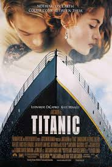

En esta página encontrarás una lista de películas recomendadas y sus descripciones.
Título: El Padrino Año: 1972 Director: Francis Ford Coppola
"El Padrino" es considerada una de las mejores películas de todos los tiempos.
Titanic es una película romántica basada en hechos reales.
La actuación de Leonardo DiCaprio fue inolvidable.
¡Ganadora de múltiples premios Óscar!
(Nota: Recomendado para mayores de 13 años)
Estreno original en 1997, pero re-estrenada remasterizada en 2012.
CO2 y H2O se mencionan en la trama científica.
Albert Einstein nació en 1879*
Disponible en:
Netflix
Amazon Prime
Lee más sobre Titanic.
| Título | Año | Género |
|---|---|---|
| Inception | 2010 | Ciencia Ficción |
| Interstellar | 2014 | Drama |